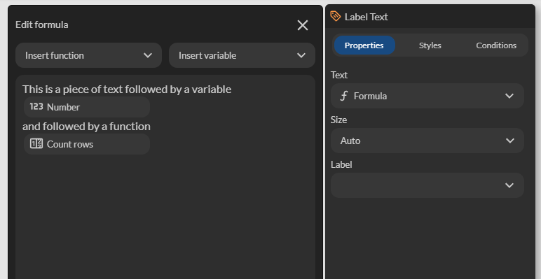

Formules
L'éditeur de formule est un outil puissant au sein de notre plateforme No-Code qui permet de créer des formules personnalisées. Ces formules peuvent intégrer du texte, des fonctions, et permettent d'afficher des données dynamiques comme des variables, des calculs, des données de tables, des images, et plus encore.
Accès à l'éditeur
Certaines propriétés de composants et d'actions supportent les formules souvent lorsque la propriété attend du texte. Par exemple : la propriété Text du composant Label Text. Cliquez sur le menu à droite de la propriété pour afficher toutes les possibilités. Ici la propriété Text peut être alimentée à partir de :
- D'un texte fixe (sans variable)
- D'une formule
- D'une variable

Sélectionnez Formula pour accéder à l'éditeur de formule.
Éditeur de formules
L'éditeur de formule permet de combiner des textes avec des données contextuelles. Pour cela, il suffit de saisir le texte et de glisser/déposer les fonctions requises. Par exemple: "Vous avez commandé [Count rows] produits". Ici [Count rows] représente une donnée dynamique (résultat d'une fonction) qui permet de calculer un nombre de lignes depuis une table.

Fonctions
| Catégorie | Description |
|---|---|
| Condition | Permet d'afficher un texte si une condition est vraie IF THEN IF THEN_ELSE |
| Number | Affiche, génère et calcule un nombre AMOUNT CALCULATE RANDOM |
| Date | Permet d'afficher une simple date, de calculer une durée entre 2 dates et faire des calculs de dates Current date & time Duration from today Add Substract |
| Text | Permet de transformer un texte, de rechercher et remplacer un motif dans un texte Text Lowercase Uppercase Capitalize Concatenate Substring Replace Split |
| Data | Affiche le résultat d'une agrégation sur des tables Count rows Maximum in rows Minimum in rows Average in rows Sum in rows |
| Image | Affiche une image. Le chemin doit être complet (absolu) Image |
| Geolocation | Affiche la distance entre la position GPS ou entre 2 positions Distance from position Distance |
| Payment | Affiche un panier et des détails Print Cart Cart amount |
| JSON | Permet de rechercher une information dans un message JSON JSON Query |
Formats
| Format | Description |
|---|---|
| Text | Formate la donnée sous forme de texte Please scan your barcode |
| Whole number | Formate la donnée sous forme de nombre entier. Les chiffres décimaux sont tronqués (ignorés) 2.2 => 2 077 => 77 123.45 => 123 |
| Number | Formate la donnée sous forme de nombre décimal. Le format supporte un nombre de décimales et une unité Si le symbole spécifié est dollar ($), le symbole dollar apparait avant le nombre 1.2 => 1.20 € 12.23567 => 12 km 34.3654 => 4452.3 € 12.32 => $12.32 |
| Currency | Formate la donnée sous forme de montant avec devise. Le nombre est affiché avec 2 chiffres après la virgule 0.2 => 0.20€ 5.0 => $5.00 |
| Distance | Formate la donnée sous forme de distance L'unité la plus appropriée est utilisée automatiquement 5.2 => 5.2 m 85200 => 85.2 km |
| Duration | Formate la donnée sous forme de durée L'unité la plus appropriée est utilisée automatiquement ou peut être sélectionnée manuellement 5.2 => 5.2 s 600 => 5 m |
| Rich text | Affiche du code HTML <i>Italic</i> => i |